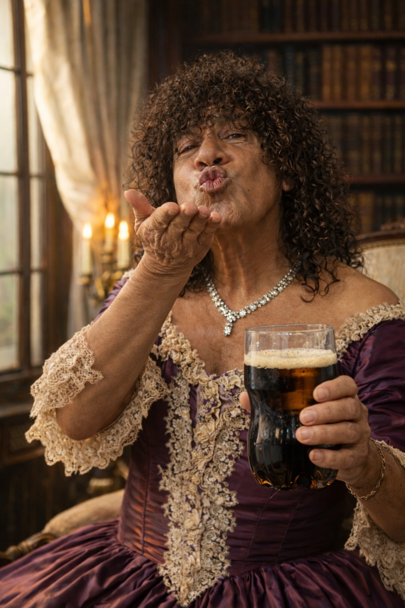

PROMPT CON IA
Tres estanterías prolijas de madera clara o hierro negro mate, iluminación blanca suave de local comercial, sin dramatismo cinematográfico. En exhibición hay EXACTAMENTE cuatro carteras de lujo hechas con piel de cocodrilo (no más, no menos). Carteras estructuradas, elegantes, textura reptil claramente visible, acabado premium impecable. Colores sobrios: negro, marrón oscuro, beige y verde oliva. Cada una tiene una etiqueta de precio colgando discretamente con cifras extremadamente elevadas en pesos argentinos: $4.850.000 $5.200.000 $6.100.000 $4.450.000 Al lado de CADA cartera hay un pequeño cuadro enmarcado tipo ficha de exposición (uno por cartera, en total cuatro cuadros). En cada cuadro aparece el retrato documental de un cocodrilo distinto, fondo neutro, estilo foto carnet o registro oficial. Debajo de cada retrato hay una placa blanca con tipografía sobria negra que indica: 16:45 — “Pegó siesta después del laburo” 07:15 — “Dijo ‘solo 15 minutos más’” 08:32 — “Se olvidó de poner la alarma” 12:25 — “No le gustaba madrugar” Las cuatro carteras y los cuatro cuadros deben verse claramente dentro del encuadre vertical 4:3. En el fondo del local, ligeramente desenfocada, aparece una clienta elegante observando las carteras con interés. Textura granulada sutil tipo DSLR. Estética documental cruda, sensación de escena capturada espontáneamente. No estética publicitaria glamorosa. La ironía surge del contraste entre el lujo refinado y el contenido incómodo.
Cocodrilo que
se duerme,
es
cartera

PROMPT CON IA
Una mujer joven adulta está comiendo un durazno con expresión de verdadero disfrute. Ojos levemente cerrados, gesto de placer simple y genuino. Sostiene el durazno con naturalidad, como si fuera algo delicioso y común. El durazno tiene pelos negros gruesos y notorios creciendo de su superficie, mucho más visibles y contrastantes que la pelusa natural de la fruta. Los pelos parecen humanos, oscuros, llamativos, integrados de manera hiperrealista al fruto. Son claramente visibles pero no exageradamente grotescos. La mujer no muestra disgusto ni sorpresa; al contrario, parece disfrutarlo plenamente, generando un contraste irónico con el detalle perturbador. Ambiente cotidiano: mesa simple, taza o plato común, luz natural entrando por una ventana lateral. Fondo ligeramente desenfocado. Colores ligeramente desaturados, luz natural suave, contraste moderado, textura granulada sutil tipo DSLR. Estética documental cruda, sensación de momento capturado espontáneamente. Mantener el mismo tono visual de la serie: formato 4:3, fotoperiodismo argentino, realismo social, iluminación natural, imperfecciones auténticas.
Si te gusta el
durazno,
bancate la
pelusa

PROMPT CON IA
Fotografía realista estilo fotoperiodismo argentino. Formato 4:3. Toma frontal a la altura de los ojos. Escena en el jardín amplio de una estancia o casa de campo elegante. En primer plano, un caballo mirando hacia cámara con la boca ligeramente abierta, mostrando dientes sucios con sarro visible y pequeñas moscas alrededor del hocico. En un costado de la cabeza tiene un moño decorativo rosa brillante pero algo fuera de lugar, como parte de un “regalo”. A su lado está una niña de aproximadamente 8 años, vestida con ropa de alta gama: vestido prolijo de tela fina, saco elegante, botas limpias. Peinado cuidado. Ella sonríe forzadamente, con expresión sutil de disgusto o incomodidad mientras mira al caballo. Detrás o ligeramente al costado, el padre aparece con actitud orgullosa. Viste ropa que denote alto poder adquisitivo: blazer o saco sport, camisa de buena calidad, pantalón impecable, zapatos de cuero. Está agarrado el caballo de una correa color rojo. Fondo: Luz natural de día nublado suave. Colores ligeramente desaturados, contraste natural, textura granulada sutil tipo DSLR. Estética documental cruda, sensación de escena capturada espontáneamente.
A caballo regalado
no se le miran
los
dientes

PROMPT CON IA
Fotografía de fotoperiodismo argentino, manifestación masiva en una avenida amplia de una ciudad argentina en un día lluvioso. Formato 4:3, toma frontal a la altura de los ojos, estilo documental realista, sin estética cinematográfica exagerada. Multitud compacta avanzando hacia cámara, personas gritando consignas con la boca abierta, rostros tensos y comprometidos. Expresiones reales, espontáneas, no posadas. Ropa cotidiana de clase media y trabajadora: camperas impermeables, pilotos de lluvia, buzos con capucha, mochilas, paraguas oscuros. Cabellos mojados, gotas visibles en la piel y en la ropa. En primer plano, un cartel blanco de tela sostenido por varias personas que dice claramente en letras negras: “Siempre que llovió, paro”. Asfalto mojado con reflejos apagados. Cielo gris plomizo. Edificios urbanos argentinos alrededor (balcones, carteles comerciales simples, cableado visible). Sensación de clima húmedo y frío. Colores ligeramente desaturados, contraste natural, textura granulada sutil como cámara DSLR bajo lluvia. Profundidad de campo media, multitud perdiéndose hacia el fondo. Estética cruda, auténtica, estilo cobertura de diario argentino.
Siempre que
llovió,
paró

PROMPT CON IA
Retrato ultra realista de cuerpo completo, formato 4:3. Un hombre argentino mayor, carismático, con cabello muy rizado y voluminoso con algunas canas, sonrisa amplia y expresión pícara y segura. Está de pie con actitud confiada dentro de una lujosa mansión estilo realeza, con una gran biblioteca antigua de madera y estanterías llenas de libros como fondo. Lleva puesto un vestido antiguo de seda color bordó profundo, con falda amplia tipo campana y detalles de encaje elegante, estilo siglo XVIII. La tela debe verse brillante y con textura realista. A la izquierda de la escena hay un ventanal grande por donde entra luz natural cálida, iluminando el ambiente con tonos dorados cinematográficos. En una mano sostiene una botella de plástico cortada llena de fernet con coca y hielo, con gotas de condensación visibles, generando un contraste humorístico entre la elegancia del vestido y la bebida popular. Con la otra mano está lanzando un beso hacia la cámara, expresión divertida y teatral. Fotografía hiperrealista, iluminación cinematográfica, profundidad de campo suave, colores cálidos, textura de piel detallada, estilo editorial de alta calidad, atmósfera elegante pero con toque irónico y humor argentino.